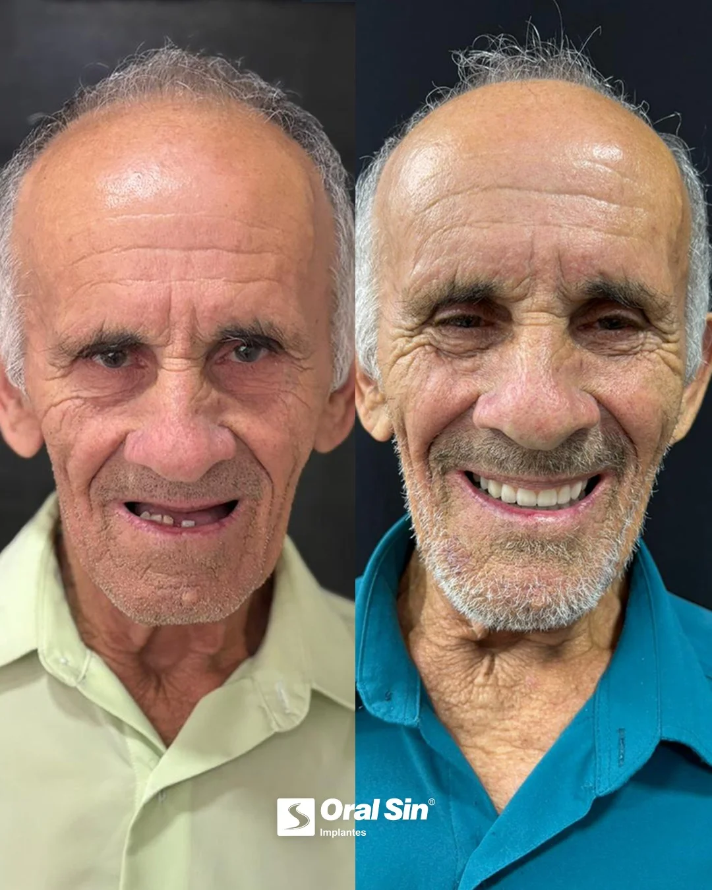

Implante ou ponte dentária: qual a melhor opção?

Quando se perde um dente, duas soluções fixas costumam aparecer: o implante dentário e a ponte fixa. As duas devolvem estética e mastigação, mas funcionam de formas bem diferentes. Entender cada uma ajuda a fazer a escolha certa.
Como funciona cada uma
O implante substitui a raiz do dente por um pino de titânio no osso, sobre o qual é fixada uma coroa. Ele é independente e não envolve os dentes vizinhos.
A ponte fixa "faz uma ponte" sobre o espaço vazio: os dois dentes vizinhos são desgastados e viram pilares para sustentar a prótese que substitui o dente ausente.
A principal diferença: o implante preserva os dentes vizinhos; a ponte tradicional exige desgastá-los.
Comparativo direto
Preservação dos dentes vizinhos
- Implante: não mexe nos dentes ao lado.
- Ponte: desgasta dois dentes saudáveis para servirem de apoio.
Saúde do osso
- Implante: estimula o osso, evitando a perda óssea onde faltava o dente.
- Ponte: não estimula o osso na região do dente perdido.
Durabilidade
- Implante: pode durar décadas, com manutenção.
- Ponte: costuma ter vida útil menor e pode precisar de troca.
Higiene
- Implante: limpo como um dente natural.
- Ponte: exige limpeza especial embaixo da prótese.
Quando a ponte ainda pode ser indicada
A ponte pode ser uma alternativa quando há contraindicação ao implante, pouco osso sem possibilidade de enxerto, ou quando os dentes vizinhos já precisam de coroas. Cada caso deve ser avaliado individualmente.
E o investimento?
A ponte costuma ter custo inicial menor, mas o implante tende a compensar a longo prazo por sua durabilidade e por não comprometer outros dentes. É importante enxergar o custo ao longo dos anos, não apenas o valor inicial.
Conclusão
Na maioria dos casos, o implante é a solução mais conservadora e duradoura, porque resolve a ausência do dente sem sacrificar os vizinhos. Mas a decisão ideal depende de uma avaliação profissional do seu caso.
Na dúvida entre implante e ponte? Uma avaliação na Oral Sin Juiz de Fora indica a melhor solução para você.